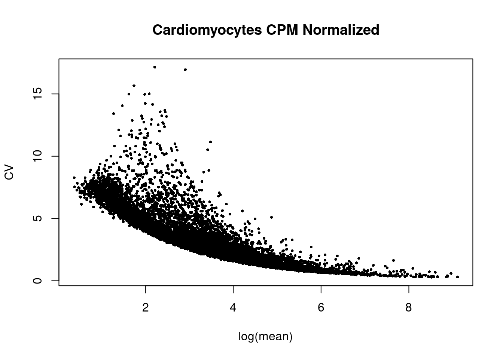
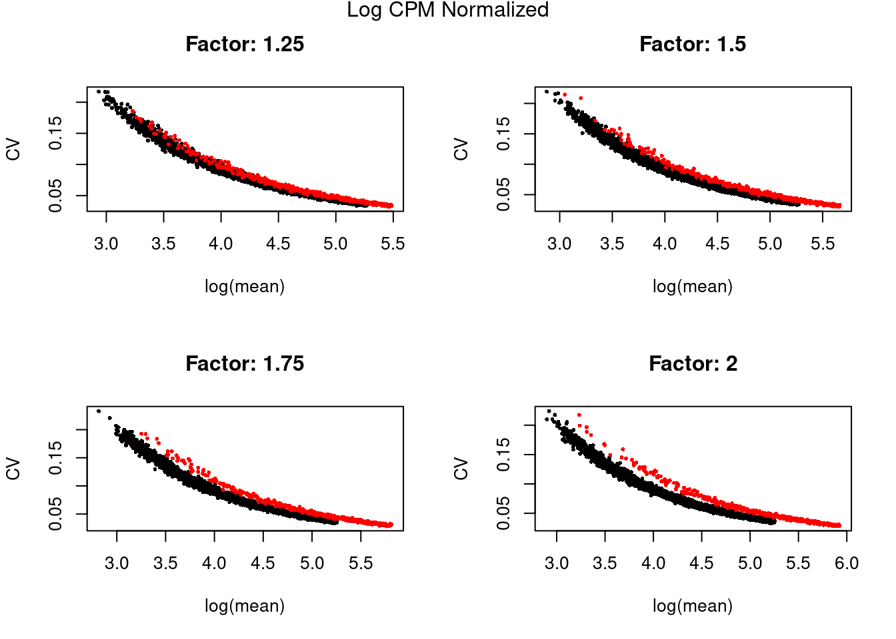

Poisson and Negative Binomial Simulations
2024-07-24
Last updated: 2024-08-16
Checks: 5 2
Knit directory: differentialDispersion/
This reproducible R Markdown analysis was created with workflowr (version 1.7.1). The Checks tab describes the reproducibility checks that were applied when the results were created. The Past versions tab lists the development history.
The R Markdown file has unstaged changes. To know which version of
the R Markdown file created these results, you’ll want to first commit
it to the Git repo. If you’re still working on the analysis, you can
ignore this warning. When you’re finished, you can run
wflow_publish to commit the R Markdown file and build the
HTML.
Great job! The global environment was empty. Objects defined in the global environment can affect the analysis in your R Markdown file in unknown ways. For reproduciblity it’s best to always run the code in an empty environment.
The command set.seed(20240625) was run prior to running
the code in the R Markdown file. Setting a seed ensures that any results
that rely on randomness, e.g. subsampling or permutations, are
reproducible.
Great job! Recording the operating system, R version, and package versions is critical for reproducibility.
Nice! There were no cached chunks for this analysis, so you can be confident that you successfully produced the results during this run.
Using absolute paths to the files within your workflowr project makes it difficult for you and others to run your code on a different machine. Change the absolute path(s) below to the suggested relative path(s) to make your code more reproducible.
| absolute | relative |
|---|---|
| /project2/gilad/awchen55/differentialDispersion/data/hybrid_lines_raw_data/human.ASE.Rep3.h5Seurat | data/hybrid_lines_raw_data/human.ASE.Rep3.h5Seurat |
Great! You are using Git for version control. Tracking code development and connecting the code version to the results is critical for reproducibility.
The results in this page were generated with repository version f599f8d. See the Past versions tab to see a history of the changes made to the R Markdown and HTML files.
Note that you need to be careful to ensure that all relevant files for
the analysis have been committed to Git prior to generating the results
(you can use wflow_publish or
wflow_git_commit). workflowr only checks the R Markdown
file, but you know if there are other scripts or data files that it
depends on. Below is the status of the Git repository when the results
were generated:
Ignored files:
Ignored: .Rhistory
Ignored: .Rproj.user/
Ignored: analysis/cell_count_metrics_by_cell_type/
Ignored: analysis/scran_size_factors_debugging.nb.html
Ignored: code/.ipynb_checkpoints/
Ignored: data/.ipynb_checkpoints/
Ignored: data/hybrid_lines_scran_normalized_data/
Untracked files:
Untracked: analysis/.ipynb_checkpoints/
Untracked: analysis/differential_dispersion_lowess_method.ipynb
Untracked: analysis/fitting_ash_hybrid_data.Rmd
Untracked: analysis/scran_size_factors_debugging.Rmd
Untracked: data/hybrid_lines_cpm_normalized/
Untracked: data/hybrid_lines_log_cpm_regressed_out_data/
Untracked: data/hybrid_lines_raw_data/
Unstaged changes:
Modified: .Rprofile
Modified: analysis/differential_dispersion_hybrid_line.Rmd
Modified: analysis/differential_dispersion_hybrid_line_cpm_analysis.Rmd
Modified: analysis/negative_binomial_dispersion_estimation.Rmd
Modified: analysis/simulation_null_analysis.Rmd
Modified: code/step1_calculate_cell_count_metrics_lowess_method.py
Modified: code/step2_residual_calculations_lowess_values.py
Modified: code/step3_bootstrapping_cell_types_lowess_method.py
Deleted: data/chimp_ASE_subset.csv
Deleted: data/human_ASE_subset.csv
Note that any generated files, e.g. HTML, png, CSS, etc., are not included in this status report because it is ok for generated content to have uncommitted changes.
These are the previous versions of the repository in which changes were
made to the R Markdown
(analysis/simulation_null_analysis.Rmd) and HTML
(docs/simulation_null_analysis.html) files. If you’ve
configured a remote Git repository (see ?wflow_git_remote),
click on the hyperlinks in the table below to view the files as they
were in that past version.
| File | Version | Author | Date | Message |
|---|---|---|---|---|
| Rmd | f599f8d | awchen55 | 2024-08-15 | updated simulation results |
| html | f599f8d | awchen55 | 2024-08-15 | updated simulation results |
| Rmd | 23e157d | awchen55 | 2024-08-13 | simulation results for disp |
| html | 23e157d | awchen55 | 2024-08-13 | simulation results for disp |
| Rmd | 5285b92 | awchen55 | 2024-08-07 | update simulation results |
| html | 5285b92 | awchen55 | 2024-08-07 | update simulation results |
| Rmd | 3891348 | awchen55 | 2024-08-06 | update simulation |
| html | 3891348 | awchen55 | 2024-08-06 | update simulation |
| Rmd | b3de4f6 | awchen55 | 2024-08-06 | update simulation results |
| html | b3de4f6 | awchen55 | 2024-08-06 | update simulation results |
| Rmd | e89b6f8 | awchen55 | 2024-07-30 | outline procedure using ash |
| html | e89b6f8 | awchen55 | 2024-07-30 | outline procedure using ash |
| Rmd | af01093 | awchen55 | 2024-07-30 | update simulation details |
| html | af01093 | awchen55 | 2024-07-30 | update simulation details |
| Rmd | 5eda9a3 | awchen55 | 2024-07-25 | added details of simulations |
| html | 5eda9a3 | awchen55 | 2024-07-25 | added details of simulations |
| Rmd | f2f7418 | awchen55 | 2024-07-24 | add simulation details |
| html | f2f7418 | awchen55 | 2024-07-24 | add simulation details |
Simulation Details
We simulate a matrix \(Y \in \mathbb{R}^{n\times p}\) that contains raw expression values (scRNA-seq counts) for \(p\) genes and \(n\) single cells. We set \(\pi\) as the percent of genes that are overdispersed. We use a Gamma-Poisson model for each gene and can set the dispersion level for each simulated gene.
Gamma-Poisson (NB) Distribution
Model
We simulate the Negative Binomial distribution using the Gamma-Poisson distribution, since the Gamma distribution is a conjugate prior of the Poisson distribution. Under this model,
\[ y_{ij} \sim Pois(L_i \lambda_j) \]
\[ \lambda_j \sim \begin{equation} f(\cdot) = \begin{cases} \pi & Gamma(\mu_j,\phi_j)\\ (1-\pi) & Gamma(\mu_0,\phi_0) \\ \end{cases} \end{equation} \]
Where the variables for cell \(i\) and gene \(j\) are:
\(y_{ij}\) is the number of unique molecular identifier (UMI) for cell \(i\) and gene \(j\)
\(L_i\) is the library size of cell \(i\)
\(\lambda_j\) is the latent expression value of gene \(j\)
\(\pi\) is the percent of genes that are overdispersed
\(\mu_j\) is the mean relative expression value of \(\lambda_j\) for gene \(j\)
\(\mu_0\) is the null relative expression value for a gene that has no dispersion
\(\phi_j\) is the dispersion value of \(\lambda_j\) for gene \(j\)
\(\phi_0\) is the null relative dispersion value for a gene that has no dispersion
Density Function
The density function for the Gamma distribution is:
\[ f(y; \mu,\phi) = \frac{(\phi^{-1}\mu^{-1})^{\phi^{-1}}}{\Gamma(\phi^{-1})} y^{\phi^{-1}-1} e^{\phi^{-1}\mu^{-1}y} \]
Where for \(y =0,1,2,...\) the \(E[Y] = \mu\) and \(Var[Y] = \mu^2 \phi\).
Simulation Parameters
We will first simulate \(\lambda_j\) using the rgamma(\(n\),\(\alpha\),\(\sigma\)) function in R with mean \(\alpha\sigma\) and variance \(\alpha\sigma^2\). Thus, \(\mu=\alpha\sigma\) and \(\phi = 1/\alpha\). We calculate \(\mu_j\) for each gene \(j\) and \(L_i\) for each cell \(i\) from the hybrid data set. For genes with dispersion, the \(E[f] = \mu_0\). We next simulate the Poisson distribution using the rpois(\(n\), \(\lambda\)) function in R. We simulate for \(n=500\) cells.
Simulations
We first calculate the mean gene expression for in the hybrid dataset using Human Cardiomyocytes from Replicate 3. Replicate 3 was chosen since there are 546 cells, which is similar to the 500 cells we will simulate.
require(Seurat)
require(SeuratDisk)
require(SeuratData)
library(ggplot2)
library(cowplot)
library(scTenifoldNet)
HC <- LoadH5Seurat("/project2/gilad/awchen55/differentialDispersion/data/hybrid_lines_raw_data/human.ASE.Rep3.h5Seurat")
cardiomyocytes_data <- subset(HC, subset = (labels == "Cardiomyocytes"))
cardiomyocytes_expression_data <- t(cardiomyocytes_data[['RNA']]$counts)We filter for low expression genes and calculate the \(L_i\) and relative expression to get \(\lambda_j\) values.
# calculate mean expression and remove genes with low expression
cardiomyocytes_expression_data_filtered <- cardiomyocytes_expression_data[, colSums(cardiomyocytes_expression_data != 0) > 50]
# calculate library size
library_sizes <- rowSums(cardiomyocytes_expression_data_filtered)
# calculate the relative expression for each cell (quantity/rowsum)
relative_expression <- t(apply(cardiomyocytes_expression_data_filtered,1, function(x) x/sum(x)))
# calculate mean relative expression per gene
mean_relative_expression <- colMeans(relative_expression)
# calculate variance relative expression per gene
var_relative_expression <-c()
for(i in 1:length(mean_relative_expression)){
var_relative_expression <- c(var_relative_expression,var(relative_expression[,i]))
}Mean Estimation
We calculate the sample mean of genes to get an idea of ranges of mean expression. This will inform us of how to bin mean expression.
hist(mean_relative_expression, breaks=100)
# get the intervals of relative mean expression
mean_intervals <- seq(min(mean_relative_expression), max(mean_relative_expression),length.out=101)Determine Dispersion Levels
We simulate a single gene for \(n=500\) cells and change the multiplier of the \(\sigma\) parameter. Again for the rgamma function, the mean is \(\alpha\sigma\) and the variance is \(\alpha \sigma^2\). Thus, we test different multipliers for sigma to increase the variance in the simulated dispersed genes.
# function to simulate a null gene and dispersed gene
sim_gene <- function(n,alpha,sigma,Li, sigma_multiplier=1){
# Simulate a single gene with following parameters:
# n: number of cells
# alpha: alpha parameter
# sigma: sigma parameter
# Li: library size
# sigma_multiplier: factor to increase variance
# Returns expression values for single gene in n cells
# initialize Y
Y <- rep(NA,n)
# calculate latent expression using gamma distribution
lambdaj <- rgamma(n,shape = alpha,scale = sigma*sigma_multiplier)
# for each cell use the latent expression and library size to simulate expression
for(i in 1:n){
Y[i] <- rpois(1,Li*lambdaj[i])
}
return(Y)
}set.seed(8626)
n=500
alpha = 0.5
sigma = 0.0002
Li = 8000
gene1 <- sim_gene(n,alpha,sigma,Li)
gene1.5 <- sim_gene(n,alpha,sigma,Li,1.5)
gene2 <- sim_gene(n,alpha,sigma,Li,2)
gene2.5 <- sim_gene(n,alpha,sigma,Li,2.5)
gene3 <- sim_gene(n,alpha,sigma,Li,3)
df1 = rbind(data.frame(factor='1', UMI=gene1), data.frame(factor='1.5', UMI=gene1.5), data.frame(factor='2', UMI=gene2), data.frame(factor='2.5', UMI=gene2.5), data.frame(factor='3', UMI=gene3))
group.colors <- c("red","blue","forestgreen","orange", "purple")
ggplot(df1, aes(UMI, fill=factor)) +
geom_histogram( alpha=1, position="dodge",binwidth=0.5) + scale_fill_manual(values=group.colors) + scale_color_manual(values=group.colors) + theme(legend.key.size = unit(0.5, 'cm'), legend.title = element_text(size=10)) + theme_bw() + xlim(-0.5, 10) + ggtitle("Histogram with Varying Dispersion for Low Alpha") 
| Version | Author | Date |
|---|---|---|
| f599f8d | awchen55 | 2024-08-15 |
set.seed(8626)
n=500
alpha = 5
sigma = 0.0002
Li = 8000
gene1 <- sim_gene(n,alpha,sigma,Li)
gene1.5 <- sim_gene(n,alpha,sigma,Li,1.5)
gene2 <- sim_gene(n,alpha,sigma,Li,2)
gene2.5 <- sim_gene(n,alpha,sigma,Li,2.5)
gene3 <- sim_gene(n,alpha,sigma,Li,3)
df1 = rbind(data.frame(factor='1', UMI=gene1), data.frame(factor='1.5', UMI=gene1.5), data.frame(factor='2', UMI=gene2), data.frame(factor='2.5', UMI=gene2.5), data.frame(factor='3', UMI=gene3))
group.colors <- c("red","blue","forestgreen","orange", "purple")
ggplot(df1, aes(UMI, fill=factor)) +
geom_histogram( alpha=1, position="dodge",binwidth=1) + scale_fill_manual(values=group.colors) + scale_color_manual(values=group.colors) + theme(legend.key.size = unit(0.5, 'cm'), legend.title = element_text(size=10)) + theme_bw() + ggtitle("Histogram with Varying Dispersion for High Alpha") + xlim(-0.5, 40) 
| Version | Author | Date |
|---|---|---|
| f599f8d | awchen55 | 2024-08-15 |
Simulating for Bins of Mean Expression
We have broken down the range of mean expression into 100 bins. For each bin we will simulate 100 genes. 5% of those genes will have \(\sigma\) multiplied by a factor of 2. This will yield 10,000 simulated genes with 5% of genes being significantly dispersed.
# calculate alpha given mean expression and fixed sigma
calc_alpha <- function(mu, sigma){
alpha = mu/sigma
return(alpha)
}
# Function to simulate genes within a bin of mean expression
sim_bin <- function(n,p,sigma,sigma_multiplier,Li,mean_expr_lwr,mean_expr_upr){
# Simulate all genes with following parameters:
# n: number of cells
# p: number of genes
# sigma: sigma parameter
# sigma_multiplier: factor to increase variance
# Li: library size
# mean_expr_lwr: lower bound of mean expression window
# mean_expr_upr: upper bound of mean expression window
# Returns matrix of expression for n cells and p genes.
# Returns vector of index values for simulated dispersed genes.
# initialize Y for bin of expression
Y_bin <- matrix(NA,nrow=n,ncol=p)
# breakdown expression range into p values
bin_expression <- seq(mean_expr_lwr,mean_expr_upr,length.out=p)
# randomly select p expression means
bin_sim_idx <- sample.int(p, p, replace = TRUE)
# randomly select 5% to be significantly dispersed
bin_disp_idx <- sample.int(p, 0.05*p, replace = FALSE)
# get expression means
sim_expression_values <- bin_expression[bin_sim_idx]
# simulate genes for each expression mean
for(i in 1:p){
# get expression mean
mu <- sim_expression_values[i]
# calculate alpha for fixed sigma based on expression mean
alpha <- calc_alpha(mu,sigma)
# for dispersed genes multiply sigma by factor
if(i %in% bin_disp_idx){
Y_bin[,i] <- sim_gene(n,alpha,sigma,Li,sigma_multiplier)
}
else{
Y_bin[,i] <- sim_gene(n,alpha,sigma,Li)
}
}
return(list("Y_bin"=Y_bin, "disp_idx"=bin_disp_idx))
}
sim_Y <- function(n,p,sigma,sigma_multiplier,Li,mean_expr_lwr,mean_expr_upr){
Y <- c()
disp_idx <- c()
for(i in 1:100){
mean_expr_lwr <- mean_intervals[i]
mean_expr_upr <- mean_intervals[i+1]
gene_sim <- sim_bin(n,p,sigma,sigma_multiplier,Li,mean_expr_lwr,mean_expr_upr)
Y_bin <- gene_sim$Y_bin
bin_disp_idx <- gene_sim$disp_idx + (i-1)*100
Y <- cbind(Y,Y_bin)
disp_idx <- c(disp_idx,bin_disp_idx)
}
return(list("Y"=Y,"disp_idx"=disp_idx))
}
cpm_norm <- function(Y){
require(scTenifoldNet)
Y_cpm_normalized <- t(cpmNormalization(t(Y)))
Y_log_cpm_normalized <- log(t(cpmNormalization(t(Y))))
Y_cv <- apply(Y_cpm_normalized, 2, sd)/apply(Y_cpm_normalized, 2, mean)
Y_mean <- apply(Y_cpm_normalized, 2, mean)
Y_cv_log <- apply(Y_log_cpm_normalized, 2, sd)/apply(Y_log_cpm_normalized, 2, mean)
Y_mean_log <- apply(Y_log_cpm_normalized, 2, mean)
return(list("Y_cpm_normalized"=Y_cpm_normalized, "Y_log_cpm_normalized" = Y_log_cpm_normalized, "Y_cv" = Y_cv, "Y_mean" = Y_mean, "Y_cv_log"=Y_cv_log, "Y_mean_log" = Y_mean_log))
}We simulate applying different factors to amplify the variance.
#### Simulate Y matrix for all genes
# Parameters
n=500
p=100
sigma = 0.0002
Li = 8000
Y_1.25 <- sim_Y(n,p,sigma,1.25,Li,mean_expr_lwr,mean_expr_upr)
Y_1.5 <- sim_Y(n,p,sigma,1.5,Li,mean_expr_lwr,mean_expr_upr)
Y_1.75 <- sim_Y(n,p,sigma,1.75,Li,mean_expr_lwr,mean_expr_upr)
Y_2 <- sim_Y(n,p,sigma,2,Li,mean_expr_lwr,mean_expr_upr)Perform normalization on data.
Y_1.25_cpm <- cpm_norm(Y_1.25$Y)
Y_1.5_cpm <- cpm_norm(Y_1.5$Y)
Y_1.75_cpm <- cpm_norm(Y_1.75$Y)
Y_2_cpm <- cpm_norm(Y_2$Y)
Y_1.25_cv <- apply(Y_1.25$Y, 2, sd)/apply(Y_1.25$Y, 2, mean)
Y_1.25_mean <- apply(Y_1.25$Y, 2, mean)
Y_1.5_cv <- apply(Y_1.5$Y, 2, sd)/apply(Y_1.5$Y, 2, mean)
Y_1.5_mean <- apply(Y_1.5$Y, 2, mean)
Y_1.75_cv <- apply(Y_1.75$Y, 2, sd)/apply(Y_1.75$Y, 2, mean)
Y_1.75_mean <- apply(Y_1.75$Y, 2, mean)
Y_2_cv <- apply(Y_2$Y, 2, sd)/apply(Y_2$Y, 2, mean)
Y_2_mean <- apply(Y_2$Y, 2, mean)We compare CPM vs log(CPM) normalization. We see the increase effect of the factor. For high expressed genes, we see the mean-variance relationship, which may make it difficult to identify signifcantly dispersed genes.
par(mfrow = c(2, 2))
plot(log(Y_1.25_cpm$Y_mean),Y_1.25_cpm$Y_cv, pch=16, cex=0.5 ,main = "Factor: 1.25", xlab="log(mean)", ylab="CV")
points(log(Y_1.25_cpm$Y_mean[Y_1.25$disp_idx]),Y_1.25_cpm$Y_cv[Y_1.25$disp_idx],pch=16,col="red",cex=0.5)
plot(log(Y_1.5_cpm$Y_mean),Y_1.5_cpm$Y_cv, pch=16, cex=0.5 ,main = "Factor: 1.5", xlab="log(mean)", ylab="CV")
points(log(Y_1.5_cpm$Y_mean[Y_1.5$disp_idx]),Y_1.5_cpm$Y_cv[Y_1.5$disp_idx],pch=16,col="red",cex=0.5)
plot(log(Y_1.75_cpm$Y_mean),Y_1.75_cpm$Y_cv, pch=16, cex=0.5 ,main = "Factor: 1.75", xlab="log(mean)", ylab="CV")
points(log(Y_1.75_cpm$Y_mean[Y_1.75$disp_idx]),Y_1.75_cpm$Y_cv[Y_1.75$disp_idx],pch=16,col="red",cex=0.5)
plot(log(Y_2_cpm$Y_mean),Y_2_cpm$Y_cv, pch=16, cex=0.5 ,main = "Factor: 2", xlab="log(mean)", ylab="CV")
points(log(Y_2_cpm$Y_mean[Y_2$disp_idx]),Y_2_cpm$Y_cv[Y_2$disp_idx],pch=16,col="red",cex=0.5)
mtext("CPM Normalized", side = 3, line = - 1, outer = TRUE)
par(mfrow = c(2, 2))
plot(Y_1.25_cpm$Y_mean_log,Y_1.25_cpm$Y_cv_log, pch=16, cex=0.5 ,main = "Factor: 1.25", xlab="log(mean)", ylab="CV")
points(Y_1.25_cpm$Y_mean_log[Y_1.25$disp_idx],Y_1.25_cpm$Y_cv_log[Y_1.25$disp_idx],pch=16,col="red",cex=0.5)
plot(Y_1.5_cpm$Y_mean_log,Y_1.5_cpm$Y_cv_log, pch=16, cex=0.5 ,main = "Factor: 1.5", xlab="log(mean)", ylab="CV")
points(Y_1.5_cpm$Y_mean_log[Y_1.5$disp_idx],Y_1.5_cpm$Y_cv_log[Y_1.5$disp_idx],pch=16,col="red",cex=0.5)
plot(Y_1.75_cpm$Y_mean_log,Y_1.75_cpm$Y_cv_log, pch=16, cex=0.5 ,main = "Factor: 1.75", xlab="log(mean)", ylab="CV")
points(Y_1.75_cpm$Y_mean_log[Y_1.75$disp_idx],Y_1.75_cpm$Y_cv_log[Y_1.75$disp_idx],pch=16,col="red",cex=0.5)
plot(Y_2_cpm$Y_mean_log,Y_2_cpm$Y_cv_log, pch=16, cex=0.5 ,main = "Factor: 2", xlab="log(mean)", ylab="CV")
points(Y_2_cpm$Y_mean_log[Y_2$disp_idx],Y_2_cpm$Y_cv_log[Y_2$disp_idx],pch=16,col="red",cex=0.5)
mtext("Log CPM Normalized", side = 3, line = - 1, outer = TRUE)
sessionInfo()R version 4.2.0 (2022-04-22)
Platform: x86_64-pc-linux-gnu (64-bit)
Running under: CentOS Linux 7 (Core)
Matrix products: default
BLAS/LAPACK: /software/openblas-0.3.13-el7-x86_64/lib/libopenblas_haswellp-r0.3.13.so
locale:
[1] LC_CTYPE=en_US.UTF-8 LC_NUMERIC=C LC_TIME=C
[4] LC_COLLATE=C LC_MONETARY=C LC_MESSAGES=C
[7] LC_PAPER=C LC_NAME=C LC_ADDRESS=C
[10] LC_TELEPHONE=C LC_MEASUREMENT=C LC_IDENTIFICATION=C
attached base packages:
[1] stats graphics grDevices utils datasets methods base
other attached packages:
[1] scTenifoldNet_1.3 cowplot_1.1.1 ggplot2_3.5.1
[4] SeuratData_0.2.2.9001 SeuratDisk_0.0.0.9021 Seurat_5.1.0
[7] SeuratObject_5.0.2 sp_1.6-0
loaded via a namespace (and not attached):
[1] spam_2.8-0 workflowr_1.7.1 plyr_1.8.7
[4] igraph_2.0.3 lazyeval_0.2.2 splines_4.2.0
[7] RcppHNSW_0.4.1 listenv_0.8.0 scattermore_1.2
[10] digest_0.6.29 htmltools_0.5.2 fansi_1.0.3
[13] magrittr_2.0.3 tensor_1.5 cluster_2.1.3
[16] ROCR_1.0-11 globals_0.15.0 matrixStats_0.62.0
[19] spatstat.sparse_3.0-0 colorspace_2.0-3 rappdirs_0.3.3
[22] ggrepel_0.9.5 xfun_0.30 dplyr_1.1.4
[25] crayon_1.5.1 jsonlite_1.8.0 progressr_0.10.0
[28] spatstat.data_3.0-0 survival_3.3-1 zoo_1.8-10
[31] glue_1.7.0 polyclip_1.10-0 gtable_0.3.0
[34] leiden_0.4.2 future.apply_1.9.0 abind_1.4-5
[37] scales_1.3.0 DBI_1.1.2 spatstat.random_3.1-3
[40] miniUI_0.1.1.1 Rcpp_1.0.12 viridisLite_0.4.0
[43] xtable_1.8-4 reticulate_1.24 bit_4.0.4
[46] dotCall64_1.0-1 htmlwidgets_1.5.4 httr_1.4.3
[49] RColorBrewer_1.1-3 ellipsis_0.3.2 ica_1.0-2
[52] farver_2.1.0 pkgconfig_2.0.3 sass_0.4.1
[55] uwot_0.1.14 deldir_1.0-6 utf8_1.2.2
[58] tidyselect_1.2.1 labeling_0.4.2 rlang_1.1.4
[61] reshape2_1.4.4 later_1.3.0 munsell_0.5.0
[64] tools_4.2.0 cli_3.6.3 generics_0.1.3
[67] ggridges_0.5.3 evaluate_0.15 stringr_1.5.1
[70] fastmap_1.1.0 yaml_2.3.5 goftest_1.2-3
[73] RhpcBLASctl_0.23-42 knitr_1.39 bit64_4.0.5
[76] fs_1.5.2 fitdistrplus_1.1-8 purrr_1.0.2
[79] RANN_2.6.1 pbapply_1.5-0 future_1.25.0
[82] nlme_3.1-157 whisker_0.4 mime_0.12
[85] hdf5r_1.3.8 compiler_4.2.0 rstudioapi_0.13
[88] plotly_4.10.0 png_0.1-7 spatstat.utils_3.0-1
[91] tibble_3.2.1 bslib_0.3.1 stringi_1.7.6
[94] highr_0.9 RSpectra_0.16-1 lattice_0.20-45
[97] Matrix_1.6-4 vctrs_0.6.5 pillar_1.9.0
[100] lifecycle_1.0.4 spatstat.geom_3.0-6 lmtest_0.9-40
[103] jquerylib_0.1.4 RcppAnnoy_0.0.19 data.table_1.14.2
[106] irlba_2.3.5.1 httpuv_1.6.5 patchwork_1.2.0
[109] R6_2.5.1 promises_1.2.0.1 KernSmooth_2.23-20
[112] gridExtra_2.3 parallelly_1.31.1 codetools_0.2-18
[115] fastDummies_1.7.3 MASS_7.3-56 rprojroot_2.0.3
[118] withr_3.0.0 sctransform_0.4.1 parallel_4.2.0
[121] grid_4.2.0 tidyr_1.3.1 rmarkdown_2.14
[124] Rtsne_0.16 git2r_0.30.1 spatstat.explore_3.0-6
[127] shiny_1.7.1